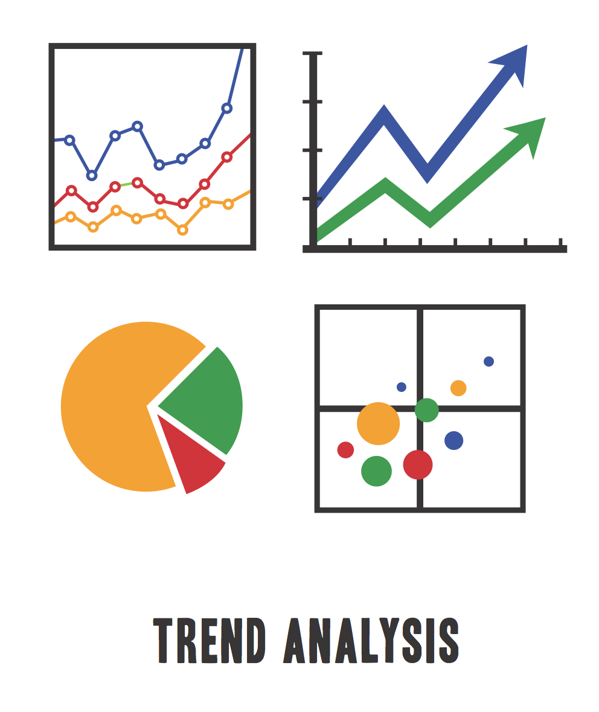

Data-Driven Service Optimization
ElitesPro delivers powerful reporting and analytics tools that help you track KPIs, monitor customer satisfaction, and identify operational trends in real-time.

Custom KPI Dashboards
Monitor all the metrics that matter — first response time, CSAT, AHT, agent performance, and more — in easy-to-read dashboards tailored to your needs.
Detailed Reports & Export Options
Generate scheduled or on-demand reports with exportable formats including Excel, PDF, and interactive charts to suit your analysis workflow.

Trend & Forecast Analysis
Leverage historical data and trend analytics to forecast staffing needs, campaign outcomes, and customer behavior patterns over time.